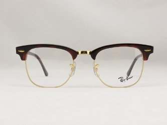

Interior design
Ettore Sottsass
 Ettore Sottsass was an Italian architect and designer of the late 20th century. His body of designs included furniture, jewelry, glass, lighting and office machine design.
Ettore Sottsass was an Italian architect and designer of the late 20th century. His body of designs included furniture, jewelry, glass, lighting and office machine design.
Sottsass was born on 14 September 1917 in Innsbruck, Austria, and grew up in Milan, where his father was an architect.
He was educated at the Politecnico di Torino in Turin and graduated in 1939 with a degree in architecture. He served in the Italian military and spent much of World War II in a concentration camp in Yugoslavia. After returning home in 1947, he set up his own architectural and industrial design studio in Milan.
In 1959 Sottsass began working as a design consultant for Olivetti, designing office equipment, typewriters and furniture. Sottsass was hired by Adriano Olivetti, the founder, to work alongside his son, Roberto. There Sottsass made his name as a designer who, through colour, form and styling, managed to bring office equipment into the realm of popular culture. Sottsass, Mario Tchou, and Roberto Olivetti won the prestigious 1959 Compasso d’Oro with the Elea 9003, the first Italian mainframe computer.
Throughout the 1960s, Sottsass traveled in the US and India and designed more products for Olivetti culminating in the bright red plastic portable Valentine typewriter in 1969, which became a fashion accessory. Sotsass described the Valentine as "a brio among typewriters." Compared with the typical drab typewriters of the day, the Valentine was more of a design statement item than an office machine.
While continuing to design for Olivetti in the 1960s, Sottsass developed a range of objects which were expressions of his personal experiences traveling in the United States and India. These objects included large altar-like ceramic sculptures and his "Superboxes"; radical sculptural gestures presented within a context of consumer product, as conceptual statement. Covered in bold and colorful, simulated custom laminates, they were precursors to Memphis, a movement which came more than a decade later.
The feeling that his creativity was being stifled by corporate work is documented in his 1973 essay "When I was a Very Small Boy". As a result, his work from the late 60's to the '70s was defined by experimental collaborations with younger designers such as Superstudio and Archizoom, and association with the Radical movement, culminating in the foundation of Memphis at the turn of the decade.
He died at his home in Milan for heart failure occurred during an influence at the age of 90 years.
Malabar Room
Ettore Sottsass - 20 year Memphis-Milano design collection. 1981-1987
Fashion design
Luxottica
 Luxottica Group S.p.A. is the world's largest eyewear Milanese company. Its best known brands are Ray-Ban and Persol. It also makes sunglasses and prescription frames for a multitude of designer brands such as Chanel and Prada, whose designs and trademarks are used under license. Luxottica also makes sunglasses branded Giorgio Armani, Burberry, Stella McCartney, Versace, Vogue, Miu Miu, Tory Burch, and Donna Karan.
The company listed in New York in 1990,the listing raised money for the company and allowed it to use its shares to acquire other brands, starting with Italian brand Vogue in 1990, Persol and US Shoe Corporation (LensCrafters) in 1995, Ray-Ban in 1999.
Luxottica Group S.p.A. is the world's largest eyewear Milanese company. Its best known brands are Ray-Ban and Persol. It also makes sunglasses and prescription frames for a multitude of designer brands such as Chanel and Prada, whose designs and trademarks are used under license. Luxottica also makes sunglasses branded Giorgio Armani, Burberry, Stella McCartney, Versace, Vogue, Miu Miu, Tory Burch, and Donna Karan.
The company listed in New York in 1990,the listing raised money for the company and allowed it to use its shares to acquire other brands, starting with Italian brand Vogue in 1990, Persol and US Shoe Corporation (LensCrafters) in 1995, Ray-Ban in 1999.
Brands
Luxottica's two main product offerings are sunglasses and prescription frames. The company operates in two sectors: manufacturing & wholesale distribution, and retail distribution.The house brands include:
|
|
|
|
|
RayBan model 5154
|

Collection 1950 |